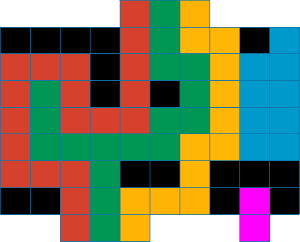
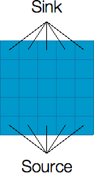
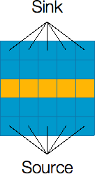
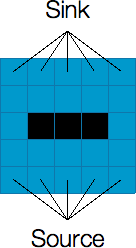
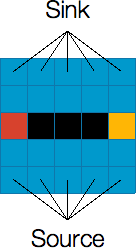

Code Jam 2014 - Round 2
Analysis: Don't Break The Nile
We are given a grid (representing a river) of size W x H filled with disjoint rectangles (representing buildings). Each cell in the grid that is not covered by a rectangle can sustain a flow of 1 unit of water through it and the water can flow to edge-adjacent cells. Cells that are covered by a rectangle cannot sustain any flow. All cells at the bottom (south side) have an implicit incoming flow of 1 unit. You are to find the maximum unit of water that can flow to the cells at the top (north side).
A Greedy Approach
If we consider a "stream" of water being a one unit connected path from the bottom to the top, then the problem can be considered as finding the maximum number of disjoint streams that can fit within the grid. If we had to find one valid stream at a time, then it would make the most sense to try to keep the stream as close to a boundary of the board as possible, because that leaves the most spaces available for future streams.
Taking this idea into an algorithm, we can start at the bottom-left-most available square, and use the left-hand-rule described here. We essentially walk forward with the goal of reaching the top, keeping as close to the left wall as possible. We show this idea in the example below. The figure shows the buildings in black, and the other colored (i.e., red, green, yellow, blue, and magenta) portions are the river. To help visualize the left-hand-rule walk, we can imagine an infinite wall on the left and right side of the river.
The first stream starts from the bottom-left-most available square which is on the 3rd cell from the left (colored red). The path to the top keeps as close to the left wall as possible as shown by the red colored cells. The second stream is the green colored cells. It goes upwards, to the left and back (since it is a dead-end) and continues to the right, keeping as close to the left wall as possible. The third stream is the yellow colored cells. And finally, the fourth stream is the magenta colored cells which fails to reach the top.
The time complexity is O(WH), which is fast enough for the small input but not for the large input. There are tricks for scaling this up to the large input, e.g. we can use coordinate compression (see the editorial for SafeJourney here) but it can be tricky to implement correctly. Therefore, in the following sections, we describe alternative approaches.
Maximum Flow
The problem statement hints that it is a maximum flow problem where the cells are the vertices in a graph. (If you are not familiar with maximum flow, you can learn about it here). Each vertex has capacity = 1 if the cell is not covered by a rectangle, otherwise the capacity of the vertex is zero. The edges between adjacent vertices can have infinite capacity. We can connect all cells at the bottom to a new vertex called the source with infinite edge capacity. Similarly, we can connect all cells at the top to a new vertex called the sink. Then we find the maximum flow from the source to the sink. With this graph modeling it is feasible to solve the small input where the number of edges is at most 4 x W x H = 4 x 100 x 500 = 200,000 and the maximum flow, f, is at most W = 100 (i.e., the total number of cells at the bottom that have implicit incoming flow of 1). If we use the Ford-Fulkerson method which has O( E f ) runtime complexity, each small test case only requires at most 20 million operations. However, this is still not enough to solve the large (in fact, this is slower than the greedy solution).
Minimum Cut
To solve for the large input, we need to look at the problem from a different point of view. It is known that the maximum flow problem is the dual of the minimum cut problem. That is, the maximum flow from the source to the sink is equal to the minimum capacity (or vertex capacity in our case) that needs to be removed (cut) from the graph so that no flow can pass from the source to the sink. It turns out that for this problem, it is easier to find the minimum cut than the maximum flow. That is, we need to determine the minimum number of cells (vertices) to be removed so that the source becomes disconnected from the sink.
 Let’s look at the example shown above. The left figure shows a river without any buildings. The source is connected to all cells at the bottom and the sink is connected to all cells at the top. The maximum flow from the source to the sink is 5. Looking at the structure of the river, It is obvious that to make a valid cut (via removing cells) that disconnects the source and the sink, the cut must form a path from the left side of the river to the right side of the river. The right figure shows the minimum cut solution where we remove the cells (highlighted with yellow color) to cut the river from left to right so that the source is now disconnected from the sink (i.e., no water can flow from the source to the sink anymore). Observe that the minimum cut (number of cells removed) is equal to the maximum flow.
Now, let’s look at examples where we actually have buildings. Since the cells covered by a building behave the same as removed cells (i.e. they do not allow water to flow through them), we can take advantage of the buildings to minimize the number of cells we need to remove to make a valid cut. See an example below where we have one building.
 The left figure shows a river with an alien building in the middle. To disconnect the source from the sink, we only need to remove two more cells: one cell that connects the left side of the river to the left side of the building (highlighted with red color), and another cell that connects the right side of the building to the right side of the river (highlighted with yellow color). Thus, the minimum cut (and consequently the maximum flow) of this graph is 2.
Minimum cut as shortest path
With the above insights, we can rephrase our problem as follows: find the shortest path from the left side of the river to the right side of the river where the vertices are the buildings and the edge-cost between two buildings is the shortest distance between them. Note that the shortest distance between two buildings is the number of cells we need to remove to cut the region between the two buildings. If you are not familiar with shortest path algorithms, you can read up this tutorial. To see how the shortest path algorithm works to solve our problem, we show it for the example in the figure below.

Remember that the black cells are buildings, and the other colored cells are water. The red cells show the shortest paths from the left side of the river to the three buildings while the yellow cells show the shortest paths from the right side of the river to the buildings (the top yellow edge connects the left side to the right side). The green cells show the distance from one building to the other, e.g. the distance between building A and B is 4.
To find a valid cut, we need to form a path from the left side of the river to the right side by going through the colored cells (other than blue and black cells). In the example above, the minimum cut is formed by the shortest path from the left side of the river to A (with distance 2) then from A to B (with distance 4) then from B to the right side of the river (with distance 5). Thus the minimum number of cells (minimum cut) that needs to be removed to disconnect the source and the sink is 11 cells, which is equal to the maximum flow.
To compute the distance between two buildings, it is enough to just look at their gap in the horizontal direction or vertical direction, and take the maximum of the two. The horizontal gap would be essentially the smallest distance between the two buildings if you were to project the two buildings on the horizontal (x) axis (likewise for the vertical gap). For example, building A and building B has 2 unit of vertical gap and 4 unit of horizontal gap. The distance from A to B is the one with the greater gap (i.e., 4 for the horizontal gap). Note that the vertical gap between building A and C is 0 as they overlap in their projection on the vertical (y) axis.
When computing the gap, we can imagine the left side and right side are buildings too (with infinite height). For those, we compute the horizontal gap only and ignore the vertical gap.
One may wonder about the case where there is another building between any two buildings. It means the actual distance between the two buildings can be shorter (by taking advantage of the building in between). This occurs when we look at the distance between building A and C. The actual gap between and A and C is 9 but due to the presence of building B, the distance is reduced to 8 (i.e. the sum of distance between A and B, and distance between B and C). Since we run a standard shortest path algorithm, it should take advantage of the buildings in between (i.e., the algorithm will not pick the edge (with higher distance) between A and C and instead go for the shorter distance through another building).